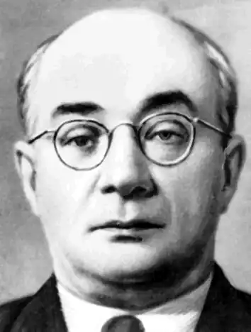

(9 жовтня 1904 — 23 листопада 1983)
З юних дебютантів другої половини двадцятих років Бажан єдиний устиг за короткі п'ять хвилин до "дванадцятої" (1928 — 1931) вивершитись на богатиря поезії нашого сторіччя. Його виступ із першою книжкою стався в час, коли кремлівський Вій уже показав пальцем на викритого Кагановичем автора "Синіх етюдів" і "Камо грядеши". Москва вже йшла в другу фронтальну атаку проти України, і російсько-українська політична, культурна й усяких інших форм війна дійшла критичного пункту. 21-річний Бажан приєднується до найвідважніших, кличе іти назустріч бурі, "рубати ланцюги причалів"; "в часи смертельного авралу і компаса і серцю метнутись не даси убік". ("Нічний рейс", 1927). І дійсно, наступних кількох аварійних років Бажан (подібно як Микола Куліш п'єсами) капітально зміцнює позиції молодого українського відродження своїми найкращими творами — "Будівлі", "Гетто в Гумані", "Розмова сердець", "Сліпці"... Тоді на межі тридцятих років російська радянська поезія вже нічого рівновартного цьому не могла протиставити.
І ще одно диво: серед терористичного шалу московської розплати зумів він уникнути не тільки російської кулі, ґрат чи колючого дроту на Соловках, а й, так би мовити, остатися "при владі", "ходити в білих сенаторських штанах". Його свіжа, могутня суверенна українська сила була врахована і "пошанована" остільки, що коли після поразки він підняв руки, то його Сталін потрактував як маршала, що дав згоду на капітуляцію. Щоб схилити його також до коляборації, то одною рукою йому весь час показують цівку пістоля, а другою дають аж дві сталінські премії, орден Леніна, орден Червоного Прапора, орден Червоного Трудового Прапора, роблять його членом Президії Верховних Рад СРСР і УРСР, членом Академії наук, речником радянської делегації в Об'єднаних Націях, віце-прем'єром України, нарешті, членом ЦК партії. В лютому 1941 вперше в історії КПУ на київському партактиві звіт за конференцію ВКП(б) робить не перший секретар ЦК КПУ (тоді Хрущов), а Бажан, про якого не знали навіть, що він уже став членом партії. Офіційно перша сталінська премія (1946) була за антинімецькі "Клятва" (1941), "Данило Галицький" (1942) і "Сталінградський зошит" (1943). А друга — за антианглійські "Англійські враження" (1948). Але фактично сталінські премії Бажан, як і Тичина та Рильський, здобув головно одами до Сталіна й Москви ("Людина стоїть в зореноснім Кремлі" — 1932, "Клич вождя" — 1939, "Ранок у Горі" та інші). Сюди належать також такі його виступи, як промова в Об'єднаних Націях з вимогою видачі української радянської еміграції Москві (див. "Радянська Україна" за 6 і 7 лютого 1946) чи стаття "До кінця викорчувати буржуазно-націоналістичні погляди в питаннях історії і літератури України" ("Радянська Україна", 17 листопада 1946). Чи мусів поет платити ще якусь "дань" за своє життя? Хто знає культурну й національну вартість "Соняшних клярнетів" і "Замість сонетів і октав" чи "Розмови сердець" і "Сліпці", той може повірити, що навіть для Москви і Сталіна оди Тичини, Рильського і Бажана прямим катам України і культури — ціна фантастично найвища — ціна духового єства людини і нації. Такі речі були можливі тільки на вістрі ножа при горлі, коли навколо росли гори трупів. Ще в 1934 році, після загибелі кількох мільйонів українців і перших віршів Сталінові, Москва ясно грозила поетові: "Тільки зрозумівши катастрофу, яка чекає тих, хто відірвався від широкого шляху пролетарської революції, може Бажан досягти переломового пункту в його творчості" ("Червоний шлях", ч. І, 1934, стор. 186). Народився Бажан 9 жовтня 1904р. в Кам'янці-Подільському, але його юнацькі роки пройшли в Умані. Батько його Платон був військовим топографом, за неперевіреними чутками генеральського рангу. Кам'янець-Подільський і Умань — визначні центри української історії і традиції. Тут віяв дух глибокого історичного простору, перехрещувались шляхи впливів грецького та італійського Півдня, католицького Заходу, магометанського і жидівського Сходу. Тут ще були свіжі спомини про останні вибухи козацької України — Гонту, Залізняка, Кармелюка. В Умані під час революції 1917 — 1921рр. кипіла місцева національно-державна і культурна ініціятива, тим часом як через місто проносилися найрізноманітніші воєнні вихори — галицькі Січові Стрільці і Махно, німецькі гусари смерти і полки Тютюнника, денікінська біла гвардія і кіннота Котовського. Гостював тут довго і театр Леся Курбаса (1919 — 1920). Десь коло 1922 року Бажан, що закінчив Уманський кооперативний технікум, їде до Києва учитися тут в Кооперативному інституті, а потім в Інституті зовнішніх зносин. Семенко вводить Бажана в літературне життя (перший друкований вірш Бажана "Сурма юрм" у "Жовтневому збірнику панфутуристів", Київ, 1923). Та куди більший вплив, ніж Семенко, мали, мабуть, на юнака експресіоністичні вистави Курбаса в "Березолі", а пізніше Олександер Довженко, з яким Бажан познайомився, працюючи у ВУФКУ (Всеукраїнське фотокіноуправління). Бажан був одним із перших відкривачів і захоплених пропагандистів геніяльного кіномистецтва Довженка, а пізніше видав книжку про нього (О. ДОВЖЕНКО. Київ, ВУФКУ. 1930, 32 стор.). Листи Хвильового до літературної "молодої молоді" та запекла дискусія навколо них остаточно розлучають Бажана із футуризмом, і він опиняється в числі 25 "вільних академіків", що утворили ВАПЛІТЕ. Роки життя в Харкові і співпраці з Хвильовим і "романтиками вітаїзму" під постійним вогнем партійної критики були найпліднішими творчими роками в усьому дотеперішньому житті Бажана. Перша книжка поезій Бажана "17-й патруль" (Харків, "Книгоспілка", 1926, 68 стор.) позначена впливами футуризму, конструктивізму, завдяки яким Бажан уник утертих шабльонових колій попередньої української поезії. У другій книжці "Різьблена тінь", лірика ("Книгоспілка", 1927, 32 стор.), Бажан здає в архів і футуризм, намацуючи свій власний експресіоністично-барокково-романтичний стиль і охоплюючи великий круг українських тем. Все це була лише підготовка до справжньої сенсації літератури того часу — книжок: "Будівлі" (1924), "Дорога" (1930), підсумкова збірка "Поезії" (Київ, "Книгоспілка", 1930, 64 стор.); також велика історична поема "Сліпці" (нам доступні лише дві її перші частини з "Життя й революція", 1930, чч. 7 і 8-9 та 1931, чч. 1-2 і 3-4). Тут Бажан іде по найвищих верхів'ях, його суверенність проявляється в усіх напрямах. Поет, що горів спрагою політичного і культурного відродження та пориву своєї нації із тюрми в майбутнє, з якоюсь нелюдською силою дає анатомічний розтин свого — чужого — світового "гетто", розкриває "хитливість і жах" шовінізму "всіх рас і натовпів": "на інших нивах родиться твоє прийдешнє, замучений, знеславлений народе!" ("Гетто в Гумані", 1928). 1928 рік був найурожайнішим роком Бажана. Крім "Гетто в Гумані", в тому році він написав монументальні "Будівлі" — трилогію готичного собору, бароккової української брами і модерного будинку. Це надхненна синтетична анатомія трьох різних світів, стилів, душ; спроба (правда, не цілком успішна) синтези готичного спіритуального пориву вгору із всеохопною земною силою барокко. Того ж 1928 року є і поема "Розмова сердець" — пристрасна дискусія з одвічним "всеросійським" ідеологом, нищівна відповідь на "всеросійські" і всесвітні претенсії того месіянства з його комплексом "язви як великої чести", з його місією "світового городовика" (поліцая), що радий би сповідати в своїх поліційних участках "грішників" з усього світу. Тут математично точно схоплена і реконструйована поетичними засобами структура і суть явища, і то явища найбільш непроглядного, замаскованого, що складалося віками від Петра І до Сталіна. Сьогодні, коли в СРСР знову у фаворі Достоєвський епохи "Дневника" і коли програмовим виданням Москва випускає "Двенадцать" і "Скифы" Блока, а ЦК КПРС, русифікуючи Україну хоче "визволити" і всю Азію та Африку, — "Розмова сердець" звучить ще більш актуально, як у 1928 році. Але ж і сліду в цій поемі нема риторики, розумувань, деклямацій — лише чистої води поезія, досконала естетична асиміляція колосальних звалищ позаестетичних елементів, отої "сировини" життя. "Гофманова ніч" (1929) — клясичне і вершинне втілення власного стилю Бажана — вичаровує образ і ритм душі поета, придавленого прусською бюрократично-феодальною суспільною тюрмою. В шинковій оргії вчинив Гофман романтичний бунт і від "смерти ще раз видер кипучу ніч з надхненням і вином", щоб потім знову піти на дно буднів своєї мертвотної доби. Ця річ у Бажана має гіркий автобіографічний присмак. Ця гіркість почувається в найбільшому розміром, а може, й вартістю творі Бажана "Сліпці". У цій історичній епічній поемі поет, озброївшись великим історичним матеріялом і велетенським специфічним словником, малює з докладним знанням цех лірників-прошаків XVIII сторіччя. Кольорит епохи, людей, речей, психологія і дух часу схоплені в точних образах, ритмах, словах. "Незрячі жебраки", що "бачили багато", що грають віками для ярмаркових натовпів і вождів усіх епох, після Сагайдачного і Конашевича — модерним Кочубеям і т. п. — це сучасні Бажанові поети України, це сам Бажан, що бачить більше за інших, а все ж зараховує й себе до сліпців. Сюжет розгортається на основному конфлікті між старим лірником, якого прикрашують струпи і всеохопна мудрість, і молодим сліпцем, що хоче "здолати, пробитися, вийти як муж, а не мученик... Чуєш? Як муж!" Тут знову подиву гідна здібність Бажана перетопити в естетичний витвір колосальну складність, різноманітність, різноголосість та внутрішню різнодинаміку світу, уйняти весь хаос мікро— і макрокосмосу в потужний ритм, в архітектурний плян, обертати все те на своїй вісі і спрямувати в потрібному напрямі. "Сліпці" були останньою з його речей поетичною вершиною Бажана. Поеми "Число" (1931), "Смерть Гамлета" (1932) — твір, цікавий для вияснення комплексу чи проблеми гамлетизму в Бажановій творчості, — уже позначені компромісом із переможеним ворогом. Основний доробок Бажана 30-х років, по розгромі України, не у власній поезії, а в перекладах. Це насамперед незрівнянний переклад клясики грузинського середньовіччя — "Витязь у тигровій шкурі" Шота Руставелі (1937).